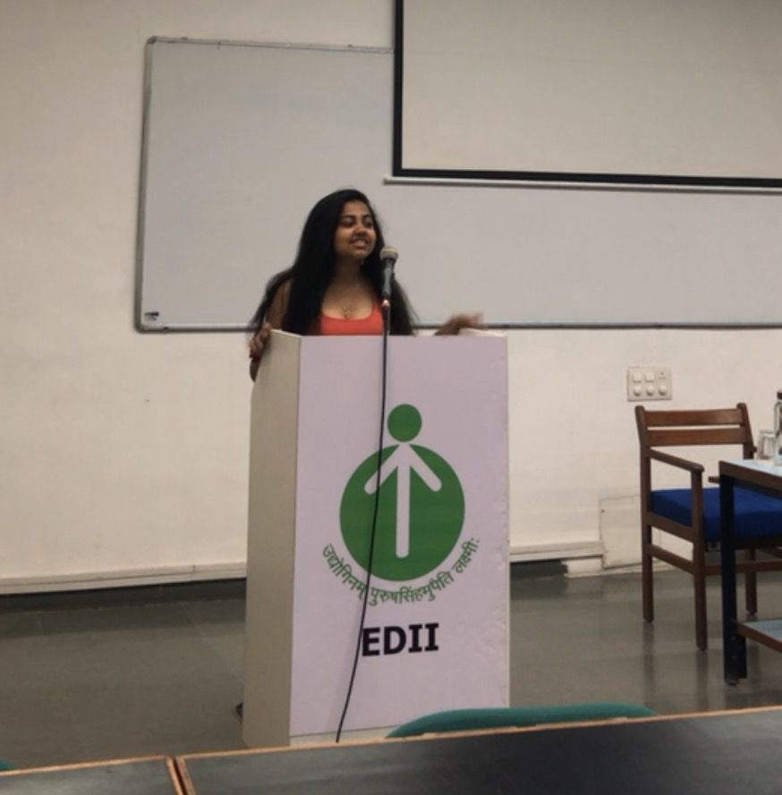
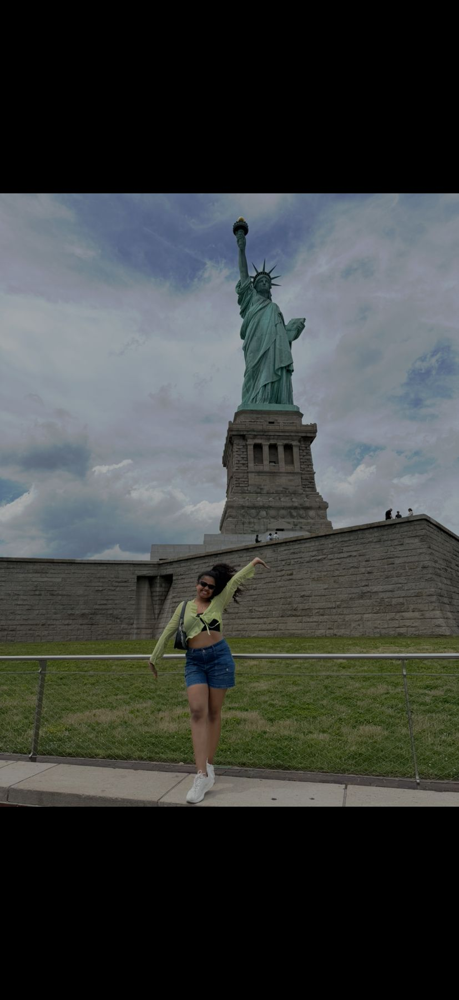
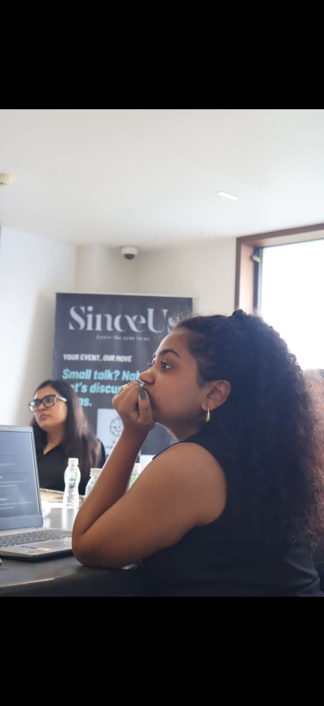

Curiosity first.
I will probably ask one more question. And then another. That's usually where the interesting stuff starts.
okay, where do I begin?
Plot twist: I'm a person outside my to-do list.
I'm curious by default, a little too enthusiastic about new ideas, and almost always thinking about what could happen if we just tried.
I like conversations that go somewhere, people who care about what they're building, and experiences that turn into stories worth telling later. I collect projects, questions, memories and probably too many screenshots.
There isn't one neat label that covers all of it. So this page is less of an introduction and more of a tiny peek behind the scenes.
Anyway. That's the lore so far. More chapters loading...



I will probably ask one more question. And then another. That's usually where the interesting stuff starts.
I'm happiest when an idea gets out of a notes app and turns into something people can actually experience.
The best parts of any project are often the people, the conversations and the moments nobody planned for.
still figuring it out. very much enjoying the plot.
THAT'S ENOUGH LORE FOR ONE PAGE
there's more where that came from.